|
惡靈古堡２-----武器介紹
|
|
M12藍道夫刀 初期裝備，Wild West公司製作， 分上、中、下段攻擊，下段攻擊 攻擊距離較長，攻擊力時間也較 短。使用時注意空間是否足夠。 |
散彈
|
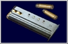 沙漠之鷲子彈 DOT50A.E彈。 |
|
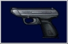 H&K VP70 Leon的裝備，德國H&K公司製作 ，彈匣可裝18發，採用特殊樹脂 材質降低重量，加快連射速度。 |
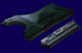 H&K VP70 Burst 有全自動裝置的組件。 |
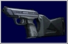 Custom手槍 由H&K VP70加上組件而成，命 中精準度高，3發連射。 |
|
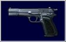 Browning HP 手槍 Claire和Ada的裝備，彈匣可裝13 發，比利時FN公司新型手槍。 |
Colt S.A.A 自動手槍 Claire的裝備，彈匣可裝6發，舊 式左輪手槍，連射速度快。 |
手槍子彈 9mm達姆彈。 |
|
沙漠之鷹50A.E Leon的裝備，彈匣可裝8發，半 自動，以色列IMI公司的 產品， 攻擊力相當強，相對後座力較大 而影響連射。 |
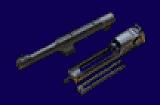 沙漠之鷹組件 |
沙漠之鷹50A.E 10英吋 將沙漠之鷹的槍管加長為10英吋 ，命中率、攻擊力都變高。 |
|
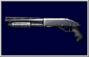 M1100-P Remington散彈槍 Leon的裝備，彈匣可裝5發，採 用輕型設計縮短了槍管，適合 攜 帶。 |
散彈槍組件 |
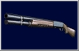 Custom散彈槍 加上組件後槍管變長、質量加 重，彈夾增至7發，同時也提 昇 了攻擊力。 |
|
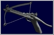 十字弓槍 Claire的裝備，英國Bernett公司製 作，質量輕， 射擊一次發射三 隻箭。 |
十字弓箭 |
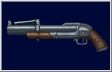 M79榴彈槍 Claire的裝備，彈匣可裝250發， 命中精準度低，攻擊距離短，可 裝填三種彈藥。 |
|
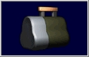 榴彈 發射後一分為五，接觸後爆炸， 攻擊範圍廣。 |
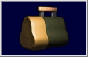 硫酸彈 彈內含有濃硫酸，爆炸時噴灑， 適合攻擊一般肉體生物。 |
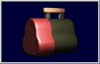 火炎彈 擊中目標後伴隨高熱火焰爆炸， 適合攻擊植物系生物。 |
|
火炎放射器 Leon的裝備，裝彈數100%， Umbrella公司研發而成，有效距 離短，連續高溫 火燄放射。 |
高壓電流槍-閃電保鑣 Claire的裝備，裝彈數100%，攻 即距離短，發射一次消耗5%， 適合用於僵屍或利卡等敵人。 |
|
|
MAC-11衝鋒槍 美國Ingram公司研發製造，裝彈 數100%，附有大型散熱配備，可 以長時間連射對付群體敵人。 |
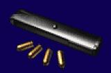 衝鋒槍彈匣 DOT380子彈。 |
火箭砲 遊戲中的終極武器，幾乎對所有 生物有一擊必殺的威力，水平攻 擊。 |
|
隱藏武器 |
||
|
MAC-11衝鋒槍 連射速度快，適合對付動作敏捷 的敵人，用來對付利卡通常都能 不受損傷解決他。彈藥無限。 取得條件：等級選擇NORMAL， 不分角色，裡關不用 急救噴霧，並以A級 以上破關。 |
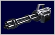 旋轉機槍 攻擊範圍很廣，攻擊力為衝鋒槍 的兩倍，能在一群敵人中殺出一 條血路，但是第一發的擊出速度 很 慢，不適合動作快的敵人。只 能水平攻擊，可是因為攻擊範圍 廣的關係，幾乎任何高度都可以 打到。彈藥無限。 取得條件：等級選擇NORMAL， 不分角色，裡關不存 檔，A級以上破關。 |
火箭砲 因發射速度較慢，不適合對付已 經接近的敵人，也不適合對付位 於高處的大蜘蛛，對所有敵人幾 乎都可以一擊必殺。彈藥無限。 取得條件：等級選擇NORMAL， 不分角色，裡關不使 用急救噴霧，並以A 級以上、2小時30分 內破關。
|
惡靈深淵Biohazard Abyss http://98.to/coolbio